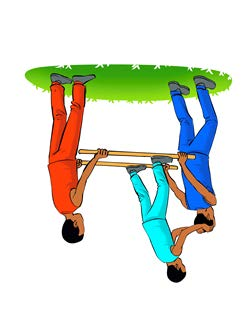
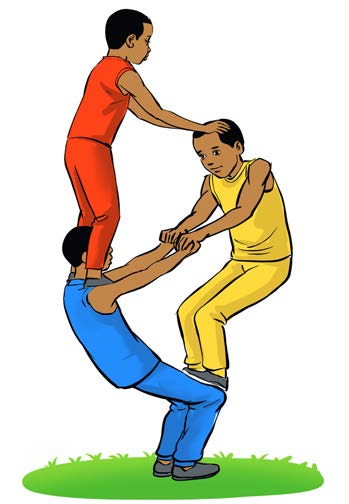

Circus in different styles
Questions
1.
What type of performing art involving body movement do you identify in these pictures?
2.
Mention the benefits of this type of art.
Activity 12
Perform a circus act.